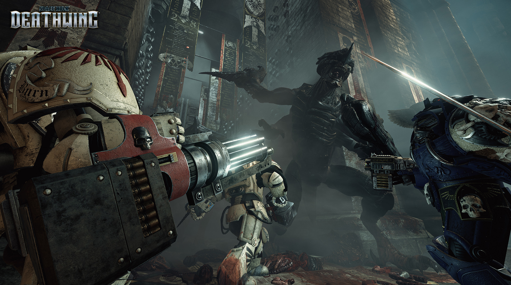

Spacehulk: Deathwing Review
Watch some gameplay here!
To its credit, Deathwing offered me several brief moments of outright, fanboyish glee. Clunking around in Terminator armor while cleansing a hallway of dozens and dozens of enemies, using an autocannon of a caliber that is normally reserved for vehicles, and literally wading through the corpses of the dead toward an objective marker in the near distance that read simply: “Purge”, I was ecstatic. It’s what playing as a Space Marine should feel like. It had me convinced that a first-person shooter was the ideal way to present this particular fantasy.
And the horde-blasting, Emperor-praising action is at its best when you jump into four-player co-op. The different playable classes (strangely missing from single-player) allow for some more variety and specialized tactics, and focusing on team coordination can distract from some of the more threadbare elements of the Space Hulk’s cast and environments. There’s an option to play with all of the available kit items and abilities for your class unlocked immediately, or you can choose to start with basic gear and earn the rest with XP over the course of a session. There are no persistent unlocks that stick with you from one session to the next, though, which was a little disappointing.
